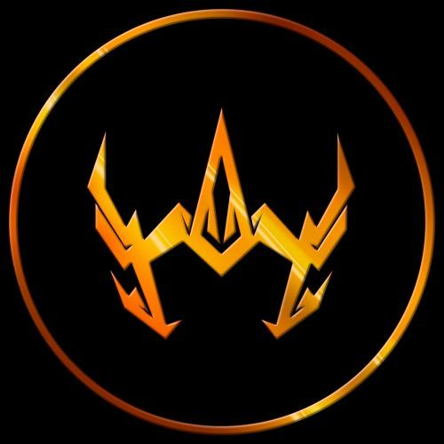

Biografía
Estudiante de Ciberseguridad en la Universidad Tecnológica de Panamá. Apasionado por la administración de sistemas, redes e infraestructura informática, enfocado en aprender constantemente nuevas tecnologías para el desarrollo web seguro.

Estudiante de Ciberseguridad en la Universidad Tecnológica de Panamá. Apasionado por la administración de sistemas, redes e infraestructura informática, enfocado en aprender constantemente nuevas tecnologías para el desarrollo web seguro.
Consolidar las bases semánticas y de diseño web con HTML5/CSS3 para la creación de interfaces responsivas y seguras.